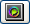

To modify an existing colormap, press the Colormap Editor button which is visible in the Properties Area when the colormap is selected. The colormap editor pops up.
This editor allows you to interactively edit a colormap and to graphically visualize the result on a selected data set by means of the histogram. The histogram is automatically colored using the current color settings.
The interface is divided into three main parts: the histogram, the gradient editor, and the color/opacity chooser. The histogram is only for visualizing the relation between a selected data set and a selected colormap. The gradient editor and the color/opacity chooser work together to modify the selected colormap.
The menu bar contains two items: a Help button which brings up this help topic in the help browser, and the Options menu which contains the following items:
This combo box is filled with all colormaps present in the Pool. The last item, Load..., allows you to load a colormap from disk. Note: Changing the current colormap will discard any changes that have not been applied or saved.
This field controls the Histogram curve representation.
The Data field represents the input data used to calculate the Histogram. If no data is available, nothing is shown in the Histogram and the field indicates "No Data". This field is filled with the data in the Pool from which a histogram can be computed (see Histogram). If the selected colormap is referenced by a data set, this data set is selected. Otherwise, the first compatible data set found in the Pool is selected.
This field controls how the Histogram vertical axis is drawn.
This field allow you to scale the Histogram depending on the min/max range to better visualize your mapping.
The purpose of the Histogram is to graphically summarize the distribution of values within the selected data set, colorized by the current colormap. The horizontal axis displays the data set values, the vertical axis displays the frequency. The three vertical lines indicate the coordinate range used for mapping data values to colors. To adjust this range, you can drag the black triangle markers at the bottom. The left and right markers move the min and max range, while the middle marker moves the min and max at the same time.
The gradient editor allows you to modify the colormap using color markers and either opacity markers or an alpha curve depending on the setting of the Show Alpha Curve toggle of the Colormap Editor's Options menu. The color is linearly interpolated between two consecutive markers. Color and alpha channels are treated separately.
When selecting a colormap, the markers are automatically extracted. To modify the gradient, you can add or remove markers. To add a new marker, click on the area containing the color or opacity marker at the desired position. A new marker is added with the interpolated value. You can move this marker horizontally by dragging or by setting a value in the Location field. The small triangle over or under the marker indicates its selection state: solid black when selected (), transparent otherwise (). The color chooser and opacity chooser values are updated each time you select a marker.
Depending on which kind of marker you select, the color chooser or opacity chooser is activated. The upper markers are for the alpha channel, the lower markers are for the RGB channel. The corresponding Location field and Delete button are enabled.
To remove a marker, select it and click on the Delete button in the active chooser. Or right click on the marker.
To the extreme right and left are the min and max range color/opacity values, which cannot be moved. Instead, two fields are provided, one on the far left, one on the far right, to allow you to specify the range of the data that the colormap will be mapped to. All input data values less than the left (minimum) value or greater than the right (maximum) are colorized using the min range color/opacity or the maximum color/opacity respectively. All other input data values are colorized with the interpolated gradient. To reposition the median point (the gradient point containing equal start and end proportion), drag it horizontally to the desired position.
Click the Adjust range button to automatically adjust the colormap range to the connected data range.
In many cases it may be more convenient to control the transparency of the colormap via the alpha curve than by using the opacity markers described above. The color gradient is updated continuously while you adjust the alpha curve.
To add a point to the curve, click where you want the point added. It it not necessary to click exactly on the curve.
To move an existing point, click on it to select it (it will be highlighted in black), then drag it with the mouse. It can also be moved using the Opacity Chooser.
To remove a point, click on it with the right mouse button.
To reset the alpha curve definition to its default state (full opacity, no intermediate points), press the Delete key.
When a color gradient marker is selected, the color chooser is activated. To the left, the control is an HSV color triangle. The circle represents the hue and the triangle the saturation and value. By moving the two cursors, it is possible to generate all possible colors of the HSV color space.
The color is also displayed as an RGB triplet in the Red, Green, and Blue fields. You can also enter the desired values explicitly [0..255].
The Gray level input field allows you to quickly specify a gray level. The Location field shows or sets the position of the color marker. Press the Delete button to delete the selected marker.
When an opacity marker is selected, the opacity chooser is activated. The vertical slider controls the opacity value (must be between 0 and 100, 100 meaning totally opaque). This value can be also modified by the Opacity input field.
The Location field and the Delete button work as described above.
{kind=link}
{kind=link}